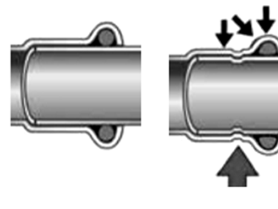
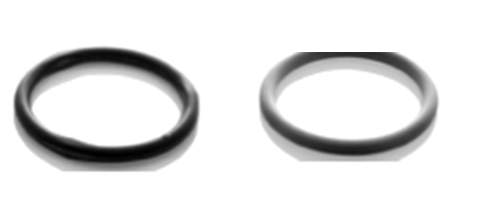
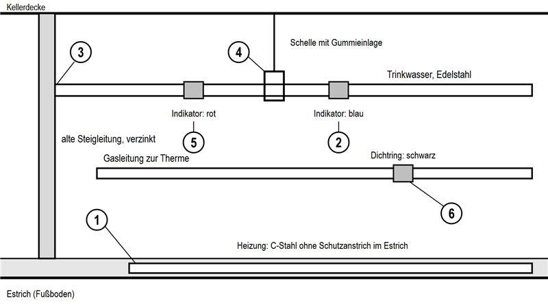

Edelstahl
Heute lernst du: welche Stahlrohre man pressen kann, wo du welches Rohr verwenden darfst, welcher Dichtring wohin gehört und wie du die Rohre richtig verarbeitest.
So arbeitest du: Lies zuerst den grauen Infokasten. Mach dann die Aufgaben darunter. Die Antworten findest du im Infokasten. Fertig? Tippe bei jeder Aufgabe auf „Prüfen“. Bessere deine Fehler aus.
„Mehr wissen ★★★“: erweiterte Aufgabenstellungen.
Du brauchst: Taschenrechner.
Infokasten A: Welche Stahlrohre kann man pressen? (Systemrohre)
C-Stahl ist normaler (unlegierter) Stahl. Er kann rosten. Darum ist er verzinkt oder hat einen Kunststoffmantel. Edelstahl rostet nicht. Die Metalle Chrom und Molybdän im Edelstahl schützen vor Korrosion (Rost). Die Oberfläche ist glatt, das ist hygienisch (sauber, gesund).
Merke: Edelstahl erkennst du an der grünen Linie. Er rostet nicht. |
Aufgabe 1 ★ leicht – Die Systemrohre
Lies Infokasten A. Was gehört in die leeren Felder? Tipp den Buchstaben ein.
A Aufputz, sieht schön aus – B C-Stahl außen verzinkt – C cremeweißer Mantel – D Edelstahl – E grüne Linie – F Heizung im Boden – G schwarze Beschriftung – H Sprinkler, Löschwasser, Druckluft
Achtung: 1 Antwort bleibt übrig.
| Systemrohr | So erkennst du es | Wofür? |
|---|---|---|
| C-Stahl mit Kunststoffmantel | ||
| rote Beschriftung | günstige Installationen | |
| C-Stahl innen und außen verzinkt | ||
| Trinkwasser |
Aufgabe 2 ★ leicht – Richtig oder falsch?
Lies Infokasten A. Kreuze an: richtig (R) oder falsch (F).
| Satz | R | F |
|---|---|---|
| Systemrohre verbindet man durch Schweißen. | ||
| C-Stahl kann rosten. Darum ist er verzinkt oder ummantelt. | ||
| Das Rohr mit der roten Schrift ist innen und außen verzinkt. | ||
| Die glatte Oberfläche von Edelstahl ist hygienisch. | ||
| Für eine Sprinkleranlage nimmt man das Rohr mit der schwarzen Schrift. |
Infokasten B: Wo darf welches Rohr hin? (offene und geschlossene Anlage)
|
Eine offene Anlage bekommt immer wieder frisches Wasser, zum Beispiel die Trinkwasserleitung. Auch Warmwasser und Zirkulation sind Trinkwasser, also offene Anlagen. Mit dem frischen Wasser kommt immer neuer Sauerstoff. Sauerstoff lässt Stahl rosten. In einer geschlossenen Anlage bleibt immer dasselbe Wasser im Rohr, zum Beispiel in der Heizung.
Auch Fittings aus C-Stahl sind in offenen Anlagen nicht erlaubt. Mischinstallation heißt: In einer Leitung sind verschiedene Metalle. Edelstahl kannst du ohne Probleme mit Edelstahl und mit Buntmetall (Kupfer, Messing) verbinden. Verbindest du Edelstahl mit C-Stahl oder verzinktem Stahl, kann Kontaktkorrosion entstehen: Das unedle Metall rostet weg. Dagegen hilft ein Distanzstück aus Kunststoff oder Buntmetall, mindestens 50 mm lang, oder eine Armatur dazwischen. Rost von außen: C-Stahl darf nicht dauernd feucht liegen. Im Boden oder unter Putz bekommt er einen Schutzanstrich oder eine Korrosionsschutzbinde. Merke: C-Stahl nur in geschlossenen Anlagen, nie im Trinkwasser. |
Aufgabe 3 ★ leicht – Darf C-Stahl hier hin?
Lies Infokasten B. Mach in jeder Zeile 2 Kreuze: 1 Kreuz bei „Anlage“ und 1 Kreuz bei „C-Stahl erlaubt?“.
| Anlage | C-Stahl erlaubt? | |||
|---|---|---|---|---|
| Leitung | offen | geschlossen | ja | nein |
| Kaltwasser zum Waschbecken | ||||
| Vorlauf zum Heizkörper | ||||
| Warmwasser zur Dusche | ||||
| Rücklauf von der Fußbodenheizung | ||||
Aufgabe 4 ★★ mittel – Alt trifft neu
Im Keller hängt eine alte, verzinkte Leitung. Du sollst eine neue Edelstahlleitung daran anschließen.
Lies Infokasten B. Kreuze an.
a) Die Gefahr heißt …
| Wärmeausdehnung (das Rohr wird länger). | |
| Kontaktkorrosion (der verzinkte Stahl rostet weg). | |
| Verkalkung (das Rohr wächst zu). |
b) Dazwischen baue ich …
| ein Distanzstück aus Kunststoff oder Buntmetall (oder eine Armatur). | |
| ein Stück verzinktes Rohr. | |
| einen Pressfitting aus C-Stahl. |
c) Wie lang ist das Distanzstück mindestens? Tipp nur die Zahl ein.
| mindestens | mm |
Infokasten C: Wie hält die Pressverbindung? (Pressfitting)
|
Am Ende vom Pressfitting ist eine Wulst. Darin liegt ein Dichtring. Du steckst das Rohr bis zum Anschlag hinein. Dann drückt die Pressmaschine mit der Pressbacke den Fitting fest auf das Rohr (Pfeile im Bild).  links: vor dem Pressen rechts: verpresst Das Pressen geht kalt: kein Feuer, kein Schweißen, keine Brandgefahr. Eine Verbindung dauert nur Sekunden. Auf jedem Fitting steckt ein Pressindikator (ein farbiges Plättchen). Darauf steht die Dimension. Die Farbe zeigt den Werkstoff: • rot = Fitting aus C-Stahl • blau = Fitting aus Edelstahl Schutzstopfen verhindern, dass Schmutz in den Fitting kommt. Unverpresst undicht: Hast du einen Fitting vergessen zu pressen, ist er bei der Druckprobe sofort undicht. So findest du den Fehler, bevor die Wand zu ist.
Merke: Roter Indikator = C-Stahl. Blauer Indikator = Edelstahl. |
Aufgabe 5 ★ leicht – Der Pressindikator
Lies Infokasten C. Kreuze an.
| Satz | Auswahl | |
|---|---|---|
| Ein Fitting aus Edelstahl hat einen … Indikator. | roten | blauen |
| Auf dem Indikator steht … | die Dimension | der Preis |
| Ein vergessener Fitting ist bei der Druckprobe … | dicht | undicht |
| Den Fitting drückt man mit der … auf das Rohr. | Pressbacke | Zange |
Aufgabe 6 ★★ mittel – Die Pressverbindung
Beim Pressfitting steckt man das Rohr bis zum Anschlag hinein (Infokasten C).
d) Warum muss das Rohr bis zum Anschlag hinein? Kreuze an.
Sonst liegt der Dichtring …
| auf dem Fitting, und der Fitting bricht. | |
| nicht auf dem Rohr, und die Verbindung ist undicht. | |
| zu weit innen, und das Rohr rostet. |
Infokasten D: Welcher Dichtring wohin? (Dichtringe)
|
Nicht jeder Dichtring hält jedes Medium aus. Man erkennt den Dichtring an der Farbe. 
Merke: Wasser = schwarz. Solar und Öl = blau. Gas = gelb. |
Aufgabe 7 ★ leicht – Dichtringe zuordnen
a) Lies Infokasten D. Welche Farbe muss der Dichtring haben? Tipp S (schwarz), B (blau) oder G (gelb).
| Medium | Farbe |
|---|---|
| Trinkwasser kalt und warm | |
| Solar | |
| Erdgas | |
| Heizungswasser | |
| Druckluft | |
| Biogas | |
| Löschwasser | |
| Mineralöle, Kraftstoffe | |
| Flüssiggas | |
| Fernwärme bis 140 °C |
b) Lies Infokasten C. Was heißt „unverpresst undicht“? Kreuze an.
| Ein Fitting ohne Dichtring ist immer undicht. | |
| Ein vergessener (nicht gepresster) Fitting ist bei der Druckprobe sofort undicht. | |
| Ein gepresster Fitting wird nach ein paar Jahren undicht. |
Aufgabe 8 ★ leicht – Welcher Dichtring?
Lies Infokasten D. Welche Farbe muss der Dichtring haben? Kreuze an.
| Baustelle | schwarz | blau | gelb |
|---|---|---|---|
| Gasleitung zur Therme | |||
| Leitung zur Solaranlage am Dach | |||
| Kaltwasserleitung im Bad | |||
| Druckluftleitung in der Werkstatt | |||
| Sprinkleranlage in der Tiefgarage |
Infokasten E: Wie schneidest du das Rohr ab? (Ablängen)
|
Ablängen heißt: das Rohr auf die richtige Länge abschneiden. Immer im rechten Winkel (gerade, 90°)!
Niemals: Trennscheibe (Flex), Säge mit grober Verzahnung, Brennschneiden. Die Hitze verändert den Stahl, dort kann er später rosten. So geht es weiter: 1. Rohr rechtwinklig ablängen. 2. Rohr innen und außen entgraten (scharfe Kante weg, sonst wird der Dichtring kaputt). 3. Einstecktiefe am Rohr markieren. 4. Fitting bis zur Markierung aufstecken. 5. Kontrollieren: Ist die Markierung direkt am Fitting? 6. Pressbacke ansetzen und verpressen. Merke: Rechtwinklig ablängen, entgraten – nie mit der Flex. |
Aufgabe 9 ★ leicht – Fehler finden in der Werkstatt
Der Lehrling Max soll eine Edelstahlleitung verlegen.
Lies Infokasten B bis E. Ist das in Ordnung oder ein Fehler? Kreuze an.
| Was Max macht | in Ordnung | Fehler |
|---|---|---|
| Max schneidet das Rohr mit der Flex ab. Das geht schnell. | ||
| Max nimmt den Rohrschneider für Edelstahl. | ||
| Max lässt das Entgraten weg, weil der Schnitt sauber aussieht. | ||
| Max nimmt für die Trinkwasserleitung Fittings mit rotem Indikator. | ||
| Max steckt das Rohr bis zum Anschlag in den Fitting. |
Warum darf Max nicht mit der Flex schneiden? Kreuze an.
| Die Flex macht zu viel Lärm. | |
| Die Flex macht einen schiefen Schnitt, das ist aber egal. | |
| Die Flex macht Hitze. Dort kann der Stahl später rosten. |
Aufgabe 10 ★ leicht – Die richtige Reihenfolge
Lies Infokasten E. Bring die Arbeitsschritte in die richtige Reihenfolge. Schreib 1 bis 6 in die Kästchen.
| Nr. | Arbeitsschritt |
|---|---|
| Fitting bis zur Markierung aufstecken. | |
| Rohr innen und außen entgraten. | |
| Kontrollieren, ob die Markierung direkt am Fitting ist. | |
| Rohr rechtwinklig ablängen. | |
| Pressbacke ansetzen und verpressen. | |
| Einstecktiefe am Rohr markieren. |
Mehr wissen ★★★
|
Wie oft muss ich das Rohr befestigen? (Stützweite) Die Stützweite ist der größte Abstand zwischen zwei Rohrschellen bei einer waagrechten Leitung (nach ÖNORM EN 806-4):
• Schellen mit Gummieinlage verwenden, dann wird kein Lärm (Körperschall) übertragen. • Schellen nur auf das Rohr setzen, nie auf einen Fitting. • Fest- und Gleitschellen so setzen, dass sich das Rohr bei Wärme ausdehnen kann. Potenzialausgleich (Erdung): Metallrohre leiten Strom. Darum werden sie an die Erdung vom Haus angeschlossen. Das macht ein Elektriker (konzessioniertes Elektrounternehmen). |
Aufgabe 11 ★★ mittel – Anwenden
|
a) Lies „Mehr wissen“. Du verlegst eine waagrechte Edelstahlleitung d = 28 mm, 9 m lang, an der Kellerdecke. Am Anfang und am Ende ist eine Schelle. Wie viele Schellen brauchst du mindestens? Tipp nur die Zahlen ein.
b) Du baust die Leitung zur Solaranlage am Dach. Im Lager liegen nur Fittings mit schwarzem Dichtring. Kannst du sie nehmen? Kreuze an. Tipp: Schau in die Tabelle im Infokasten D.
c) Ein Kollege sagt: „Die Heizungsleitung im Wohnzimmer machen wir in C-Stahl mit roter Schrift. Den Rest vom Rohr nehmen wir dann für das Trinkwasser im Bad.“ Was sagst du ihm? Kreuze an.
|
Aufgabe 12 ★★★ schwer – Schadensdetektiv im Keller
|
In einem Altbau wurde der Keller neu installiert. Nach 3 Wochen ruft der Kunde an: „Da stimmt etwas nicht.“ Du schaust dir alles an. 4 Stellen sind falsch, 2 Stellen sind in Ordnung.  a) Ist die Stelle ein Mangel (Fehler) oder in Ordnung? Kreuze an. Wähle bei jedem Mangel den Grund: Tipp den Buchstaben ein. Bei „in Ordnung“ bleibt das Feld leer. A C-Stahl liegt ohne Schutzanstrich feucht im Estrich und rostet von außen. – B Edelstahl direkt an verzinkt: Kontaktkorrosion, das Distanzstück fehlt. – C Roter Indikator = C-Stahl-Fitting, im Trinkwasser nicht erlaubt. – D Gas braucht den gelben Dichtring, schwarz ist nur für Wasser.
b) Welchen Mangel muss man zuerst beheben? Tipp die Nummer ein.
Warum? Kreuze an.
c) Der Chef sagt: „Edelstahl rostet nicht. Also ist es egal, woran wir ihn anschließen.“ Was sagst du? Kreuze an.
|
Aufgabe 13 ★★ mittel – Fachbegriffe
Fachbegriffe sind die Wörter, die man auf der Baustelle verwendet.
Welcher Fachbegriff passt zur Erklärung? Tipp den Buchstaben in das Feld.
Diese Fachbegriffe gibt es: A ablängen – B C-Stahl – C Dichtring – D Distanzstück – E entgraten – F geschlossene Anlage – G Kontaktkorrosion – H offene Anlage – I Pressbacke – J Pressindikator – K Schutzstopfen – L Systemrohr
Achtung: 2 Fachbegriffe bleiben übrig. Tipp: Lies die Infokästen A bis E.
| Erklärung | Buchstabe |
|---|---|
| Rohr, das mit passenden Pressfittings zu einem System gehört. | |
| Normaler (unlegierter) Stahl. Er kann rosten. | |
| Farbiges Plättchen am Fitting: zeigt Werkstoff (rot/blau) und Dimension. | |
| Ring im Fitting, der die Verbindung dicht macht. | |
| Anlage, die immer frisches Wasser bekommt, z. B. Trinkwasser. | |
| Anlage, in der immer dasselbe Wasser bleibt, z. B. die Heizung. | |
| Zwei verschiedene Metalle berühren sich, das unedle rostet weg. | |
| Teil aus Kunststoff oder Buntmetall zwischen zwei Metallen, mindestens 50 mm. | |
| Das Rohr rechtwinklig auf die richtige Länge abschneiden. | |
| Die scharfe Kante am Rohr innen und außen wegmachen. |
Aufgabe 14 ★★★ schwer – Fachbegriffe auf Englisch
Wie heißt der Fachbegriff auf Englisch? Tipp den Buchstaben vom englischen Wort in das Feld.
Diese Wörter gibt es: A copper – B drinking water – C gas – D heating – E ladder – F pipe – G pipe cutter – H press fitting – I rust – J saw – K sealing ring – L stainless steel
Achtung: 2 Wörter bleiben übrig.
| Deutsch | Englisch | Deutsch | Englisch |
|---|---|---|---|
| Edelstahl | Säge | ||
| Rohr | Rohrschneider | ||
| Pressfitting | Heizung | ||
| Dichtring | Trinkwasser | ||
| Rost | Gas |
Fertig? Tippe bei jeder Aufgabe auf „Prüfen“. Bessere deine Fehler aus.